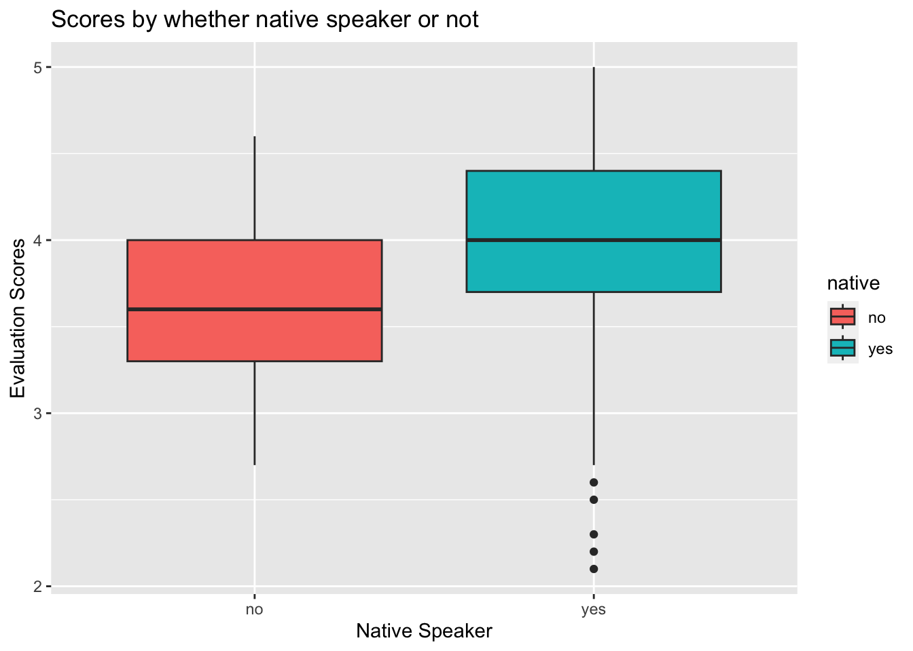
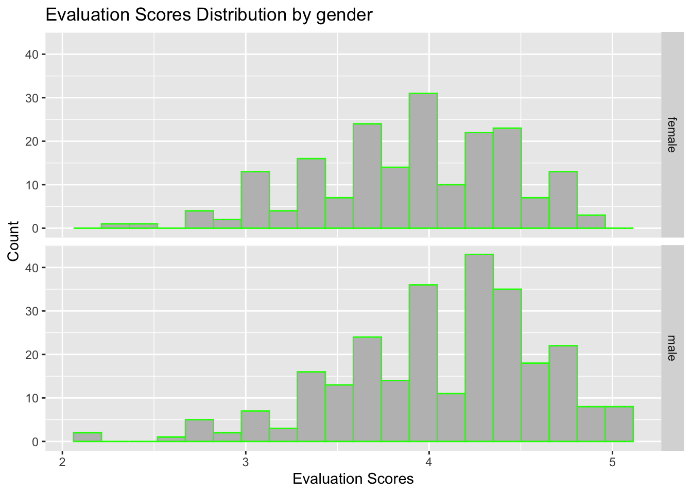
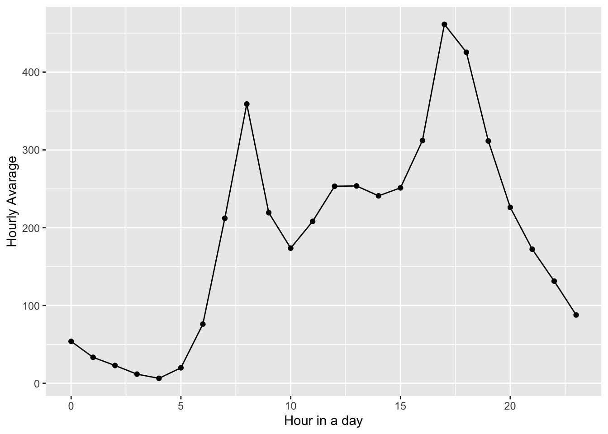
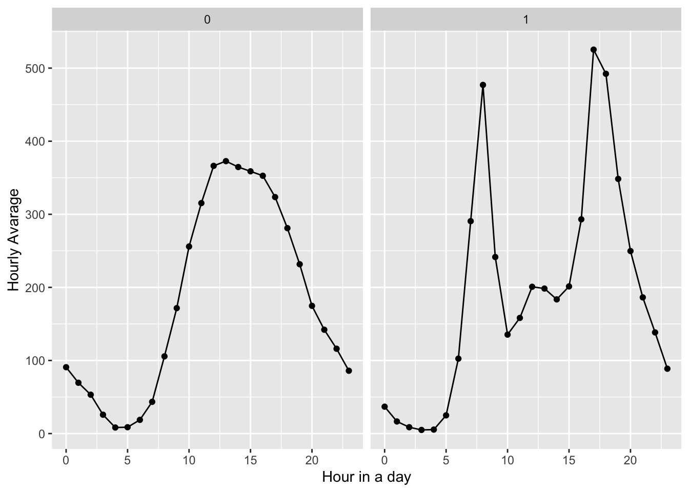
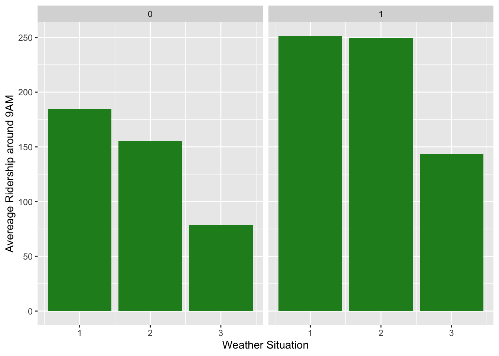

Chapter 1 Homework 1
1.1 Problem 1 Playlists revisited
playlist = read.csv('/Users/kevin/Academic/MAE/2023 Summer/R&Prob&Stat/Assignments/Data/plays_top50.csv',header = TRUE)1.1.1 Part A
xtabs(~ daft.punk + david.bowie, data=playlist,sparse=FALSE) %>% prop.table(2) %>% round(3) %>% pander()| 0 | 1 | |
|---|---|---|
| 0 | 0.925 | 0.912 |
| 1 | 0.075 | 0.088 |
Column:
0: never plays Daft Punk
1: plays Daft Punk
Row:
0: never plays David Bowie
1: plays David Bowie
1.1.2 Part B
To check out if 2 events are independent, we can use the definition: If A and B are independent, then P(A|B) = P(A|~B) = P(A) To make it clear, “plays Pink Floyd” is considered as event B, “plays Johnny cash” is event A.
| 0 | 1 |
|---|---|
| 0.94 | 0.06 |
0: never plays Johnny Cash
1: plays Johnny Cash
xtabs(~ johnny.cash + pink.floyd, data=playlist,sparse=FALSE) %>% prop.table(2) %>% round(3) %>% pander()| 0 | 1 | |
|---|---|---|
| 0 | 0.945 | 0.895 |
| 1 | 0.055 | 0.105 |
Column:
0: never plays Johnny Cash
1: plays Johnny Cash
Row:
0: never plays Pink Floyd
1: plays Pink Floyd
So, in this case P(A) = 6%, P(A|B) = 10.5%, P(A|not B) = 5.5%; clearly, they are not equal. Therefore, they are not independent and seem to have positive relationship.
Or we can check it by if P(B) = P(B|A) = P(B|~A)
xtabs(~ pink.floyd, data=playlist,sparse=FALSE) %>% prop.table() %>% round(3) %>% pander() %>% pander()| 0 | 1 |
|---|---|
| 0.895 | 0.105 |
0: never plays Pink Floyd
1: plays Pink Floyd
xtabs(~ pink.floyd + johnny.cash, data=playlist,sparse=FALSE) %>% prop.table(2) %>% round(3) %>% pander()| 0 | 1 | |
|---|---|---|
| 0 | 0.9 | 0.817 |
| 1 | 0.1 | 0.183 |
Column:
0: never plays Pink Floyd
1: plays Pink Floyd
Row:
0: never plays Johnny Cash
1: plays Johnny Cash
Clearly, P(B) = 10.5%, P(B|A) = 18.3%, and P(B|~A) = 10%, so they are not close to each other.
1.2 Problem 2 Super Bowl ads
superbowl = read.csv('/Users/kevin/Academic/MAE/2023 Summer/R&Prob&Stat/Assignments/Data/superbowl.csv',header = TRUE)1.2.1 Part A
| FALSE | TRUE |
|---|---|
| 0.7 | 0.3 |
True: should be danger
False: not danger
Which returns the results that P(danger = TRUE) = 30%
| FALSE | TRUE | |
|---|---|---|
| FALSE | 0.88 | 0.61 |
| TRUE | 0.12 | 0.39 |
Column:
True: should be danger
False: not danger
Row:
True: should be funny
False: not funny
From the table, we can know that:
P(danger = TRUE | funny = TRUE) = 39%
P(danger = TRUE | funny = FALSE) = 12%
Undoubtedly, from this statistics, humor and danger are absolutely not independent because P(danger) ≠ P(danger|funny) ≠ P(danger|not funny)
It seems that humor are indeed more or less a indication of danger for this ads, because under the condition that ads are funny, the probability of danger seems to be higher than unconditional probability and under the another condition that ads are not funny, the probability of it shows way much lower than unconditional probability.
1.2.2 Part B
| FALSE | TRUE |
|---|---|
| 0.63 | 0.37 |
True: with animals False: without animals
Which returns the results that P(animals = TRUE) = 37%
| FALSE | TRUE | |
|---|---|---|
| FALSE | 0.63 | 0.62 |
| TRUE | 0.37 | 0.38 |
Column:
True: with animals
False: without animals
Row:
True: has sex contents
False: not have sex contents
From the table, we can know that:
P(animals = TRUE | use_sex = TRUE) = 38%
P(animals = TRUE | use_sex = FALSE) = 37%
From the probability tables and unconditional probability, I think animals and use_sex are statistically independent.My argument is that the unconditional probability of animals seems to be very close to the conditional probabilities on both conditions that using sex and not using, which, from definition, shows this 2 events are independent.
1.2.3 Part C
| FALSE | TRUE |
|---|---|
| 0.71 | 0.29 |
True: with celebrities
False: without celebrities
Which returns the results that P(celebrity = TRUE) = 29%
xtabs(~ celebrity + patriotic, data=superbowl,sparse=FALSE) %>% prop.table(2) %>% round(2) %>% pander()| FALSE | TRUE | |
|---|---|---|
| FALSE | 0.71 | 0.71 |
| TRUE | 0.29 | 0.29 |
Column:
True: with celebrities
False: without celebrities
Row:
True: has patriotic contents
False: not have patriotic contents
From the table, we can know that:
P(celebrity = TRUE | patriotic = TRUE) = 29%
P(celebrity = TRUE | patriotic = FALSE) = 29%
Similar with Part B, in this part, the unconditional probability of celebrity is nearly equal to the 2 conditional probabilities of both showing patriotic contents and not showing this. Thus, they are independent on the basis of this data.
1.3 Problem 3 Beauty, or not, in the classroom
library(ggplot2)
profs = read.csv('/Users/kevin/Academic/MAE/2023 Summer/R&Prob&Stat/Assignments/Data/profs.csv',header = TRUE)1.3.1 Part A
ggplot(profs,aes(x=eval)) + geom_histogram(bins=20,color="black", fill="white") + ggtitle('Evaluation Scores Distribution') + labs(x = "Evaluation Scores", y = "Count")
Above is the histogram plot that shows course evaluation scores of all professors.
X axis shows the evaluation scores which professors have gained.
Y axis shows tha counting of each score.
We can see around 4 is where the most scores are sited. So I guess that most UT’s professor are pretty good so that they can get good evaluations scores from students.
1.3.2 Part B
ggplot(profs, aes(x=native, y=eval, fill=native)) + geom_boxplot() + ggtitle('Scores by whether native speaker or not') + labs(x = "Native Speaker", y = "Evaluation Scores")
The left red box represents the non-native English speaker.
The right blue box stands for native speaker. Y axis means the evaluation scores.
So, from this boxplot, we can conclude that native speakers generally get better score than non-native speaker.
1.3.3 Part C
ggplot(profs,aes(x=eval)) + geom_histogram(bins = 20,color="green", fill="grey") + ggtitle('Evaluation Scores Distribution by gender') + facet_grid(.~gender) + labs(x = "Evaluation Scores", y = "Count")
From this plot, we can see that male professors are more focused around 4, whereas female professors are more spread-out.
1.3.4 Part D
ggplot(profs, aes(x=beauty, y=eval)) + geom_point() + ggtitle('Scores Distribution by Beauty') + labs(x = "Physical Attractness", y = "Evaluation Scores")
X axis stands for the score of beauty.
I think that the physical attraction basically has slightly positive relationship with evaluation scores but cannot be a predictive indicator of evaluation.
1.4 Problem 4 SAT scores for UT students
utsat = read.csv('/Users/kevin/Academic/MAE/2023 Summer/R&Prob&Stat/Assignments/Data/utsat.csv',header = TRUE)
tb = data.frame(Scores = c("SAT-V", "SAT-Q", "GPA"),
Mean = c(mean(utsat$SAT.V), mean(utsat$SAT.Q), mean(utsat$GPA)),
Std = c(sd(utsat$SAT.V), sd(utsat$SAT.Q), sd(utsat$GPA)),
IQR = c(IQR(utsat$SAT.V), IQR(utsat$SAT.Q), IQR(utsat$GPA)),
quan5 = c(quantile(utsat$SAT.V,0.05), quantile(utsat$SAT.Q,0.05), quantile(utsat$GPA,0.05)),
quan25 = c(quantile(utsat$SAT.V,0.25), quantile(utsat$SAT.Q,0.25), quantile(utsat$GPA,0.25)),
median = c(quantile(utsat$SAT.V,0.50), quantile(utsat$SAT.Q,0.50), quantile(utsat$GPA,0.50)),
quan75 = c(quantile(utsat$SAT.V,0.75), quantile(utsat$SAT.Q,0.75), quantile(utsat$GPA,0.75)),
quan95 = c(quantile(utsat$SAT.V,0.95), quantile(utsat$SAT.Q,0.95), quantile(utsat$GPA,0.95)))
kable(tb, digits = 2, format = "html", row.names = TRUE)| Scores | Mean | Std | IQR | quan5 | quan25 | median | quan75 | quan95 | |
|---|---|---|---|---|---|---|---|---|---|
| 1 | SAT-V | 595.05 | 83.77 | 110.00 | 460.00 | 540.00 | 590.00 | 650.00 | 730.00 |
| 2 | SAT-Q | 619.98 | 83.08 | 120.00 | 480.00 | 560.00 | 620.00 | 680.00 | 760.00 |
| 3 | GPA | 3.21 | 0.48 | 0.72 | 2.36 | 2.87 | 3.25 | 3.59 | 3.92 |
SAT-V means SAT verbal scores and SAT-Q means SAT quantitative score, while GPA means accumulative grade points.
Mean is the average of each score, std means standard deviation, IOR is inter-quantile range.
Quan5 is 5th percentile and so on so forth.
1.5 Problem 5 bike sharing
bikeshare = read.csv('/Users/kevin/Academic/MAE/2023 Summer/R&Prob&Stat/Assignments/Data/bikeshare.csv',header = TRUE)1.5.1 Plot A
bikeshare %>%
group_by(hr) %>%
summarise(avg = mean(total)) %>%
ggplot(aes(x=hr, y=avg)) + geom_line()+ geom_point() + labs(x = "Hour in a day", y = "Hourly Avarage") In this plot, x axis stands for the 24 hours in a single day. 0 is midnight and 10 is 10a.m., so on so forth.
Y is the average ridership of each hour throughout all days in this data.
We can see that the average ridership around morning rush hour and afternoon rush hour are 2 peaks. Also, it remains fairly high during daytime but swiftly decreases in the evening.
1.5.2 Plot B
workingday0_b = bikeshare %>% filter(workingday == 0) %>% group_by(hr) %>% summarise(avg = mean(total)) %>% add_column(workingday = 0)
workingday1_b = bikeshare %>% filter(workingday == 1) %>% group_by(hr) %>% summarise(avg = mean(total)) %>% add_column(workingday = 1)
tb_b = rbind(workingday0_b, workingday1_b)
tb_b %>% ggplot(aes(x=hr,y=avg)) + geom_line()+ geom_point() + facet_wrap(~workingday) + labs(x = "Hour in a day", y = "Hourly Avarage") X and Y axis basically are the same as the plot A.
0 means weekends and holidays, while 1 means workdays. Workdays’ pattern is pretty close to plot A and it complies with common sense. But non-holidays’ pattern are quite different from Plot days, people tends to use bikes around noon till afternoon. I guess that people are likely to hang out during this time.
1.5.3 Plot C
workingday0_c = bikeshare %>%
filter(hr == 9) %>%
filter(workingday == 0) %>%
group_by(weathersit) %>%
summarise(avg = mean(total)) %>%
add_column(workingday = 0)
workingday1_c = bikeshare %>%
filter(hr == 9) %>%
filter(workingday == 1) %>%
group_by(weathersit) %>%
summarise(avg = mean(total)) %>%
add_column(workingday = 1)
tb_c = rbind(workingday0_c, workingday1_c)
tb_c %>% ggplot(aes(weathersit,y=avg)) + geom_bar(stat='identity', fill="forest green") + facet_wrap(~workingday) + labs(x = "Weather Situation", y = "Avereage Ridership around 9AM") 0 and 1 has the same meaning as Part B.
X axis means weather situation where 1 means sunny day, 2 means cloudy and misty day, and 3 means light snowy and light rainy day.
Y axis represents the avarage ridership around 9a.m.
So, in non-workdays, when the weather becomes cloudy, a few people may not go out riding bike because they might think that there will be potential rains. However, in workdays, almost all people will not change their original plan, which is getting a bike, just because of potential rains. They have to work!